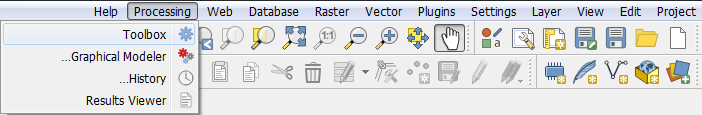
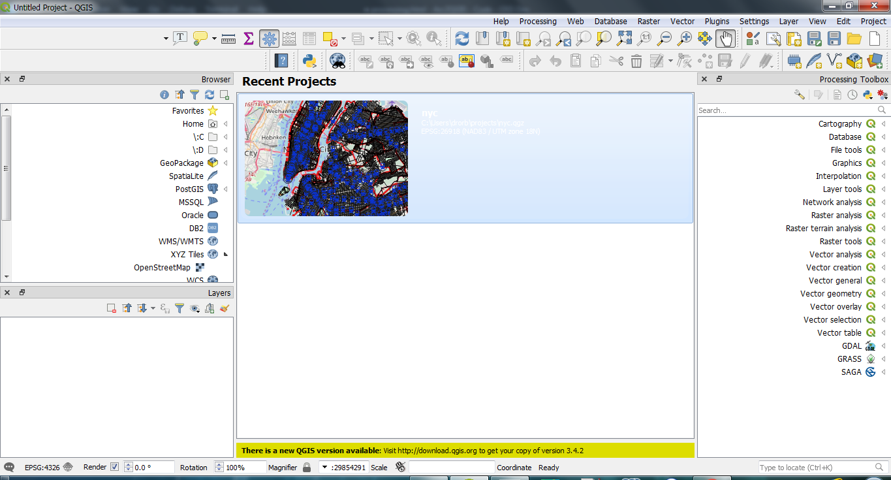
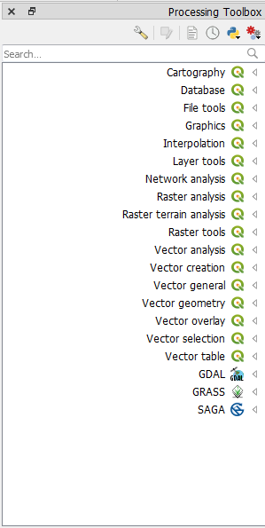
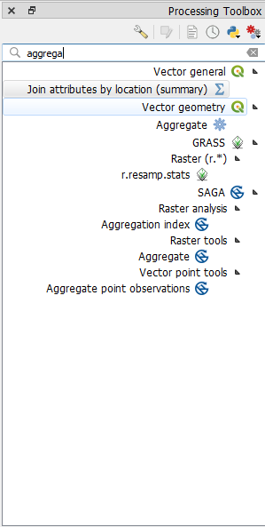
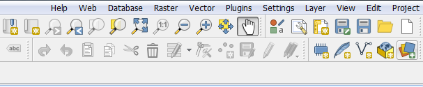
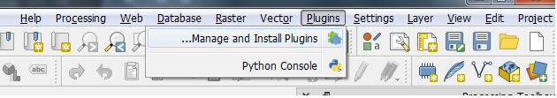
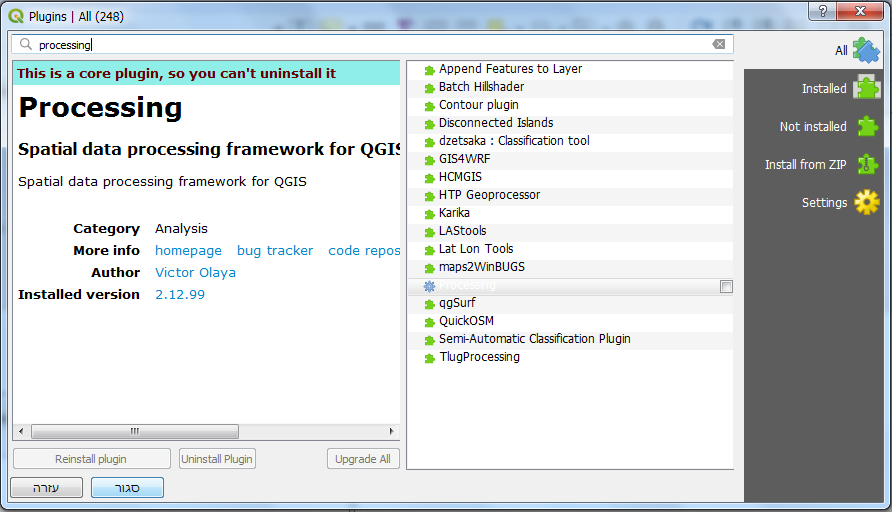

The Processing Toolbox
Back To Basic Concepts
Back To Homepage
An Introduction To The Processing Toolbox In QGIS
Just like the Toolboxes in ArcGIS Desktop, QGIS has the Processing toolbox.
It contains processing tools and algorithms not only from QGIS itself but also from other sources such as GRASS GIS, SAGA and GDAL (which ArcGIS also uses).
To use the processing toolbox you first have to activate it. this can be done by clicking the processing menu, and then select Toolbox

After this is done the toolbox will open on the right hand side of the screen.

This is where you can search for tools by name through the search bar or by category\ provider software manually.

Some processing can be in both the base version of QGIS or in one of the other providers, for example the aggregate (or join by location) tool is found in both base QGIS twice and in both GRASS and SAGA.

And thats it. you can use the tools according to each individual tools capability.
If there is a tool you can't find and need help, you can search for it in the guide
by the name it has in ArcGIS Desktop and if we don't have it yet you can contact us through the issues page
My Processing Menu\Toolbox is Missing
The processing toolbox is a Core Plugin in QGIS and as such must always be installed.
That said, sometimes new users can't find it (and experienced users who forgot they went through this part).
If your toolber doesn't have the processing menu and looks like this, don't be scared.

It just means you have to enable the processing plugin.
To do this simply click the Plugins menu or alt+P and open the plugins manager.

Search for "processing" and enable the plugin, this can take some time on slower systems.

And thats it, you now have the processing menu and through it the processing toolbox.
to open the processing toolbox go back up